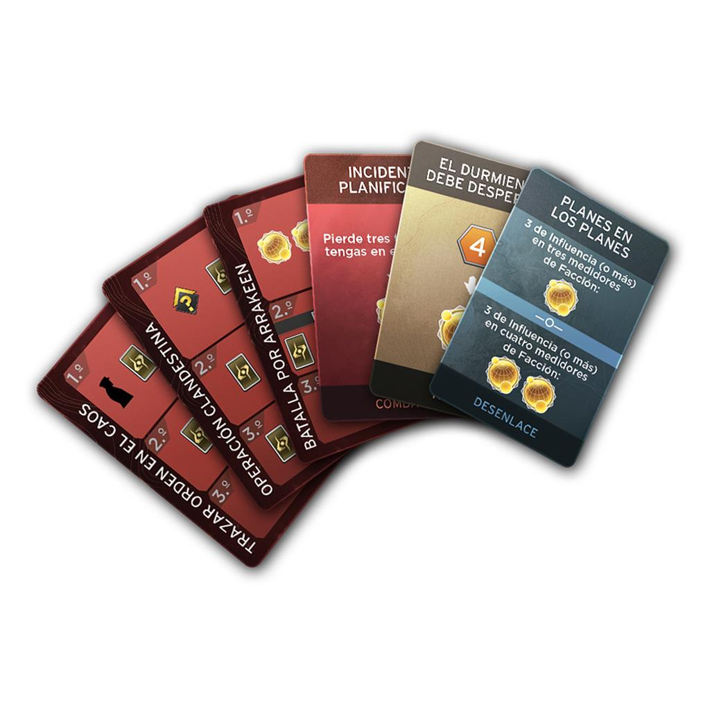
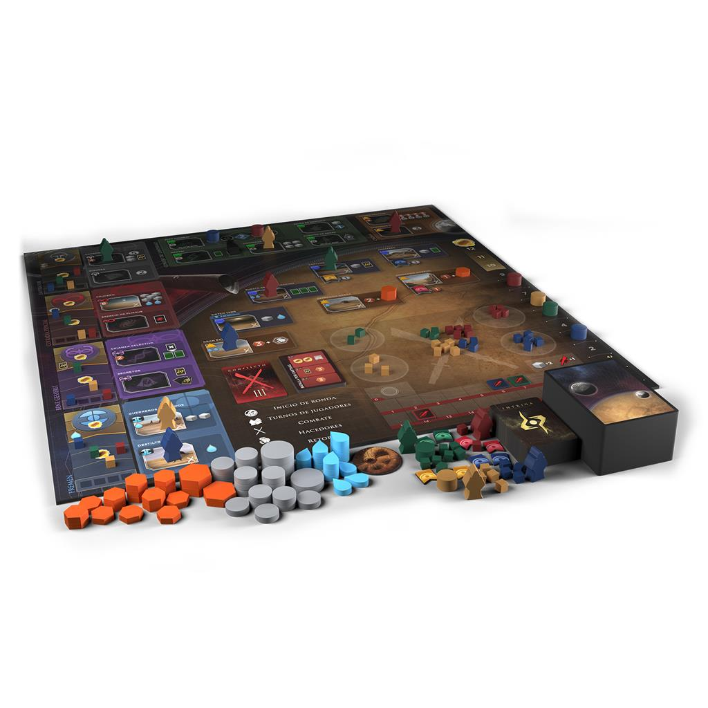
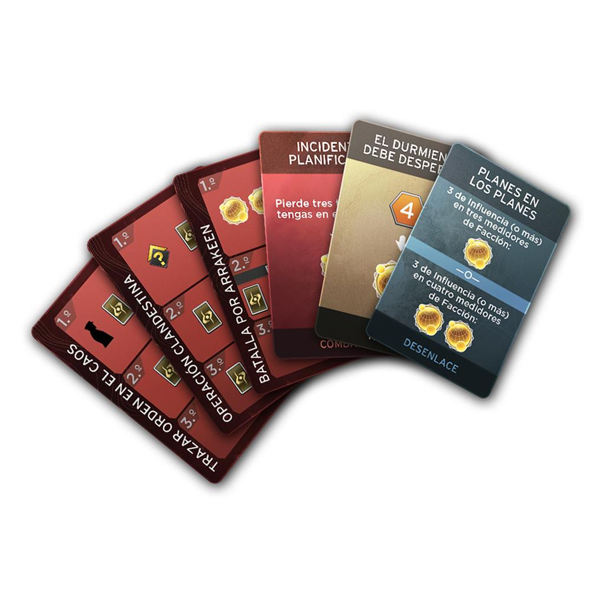
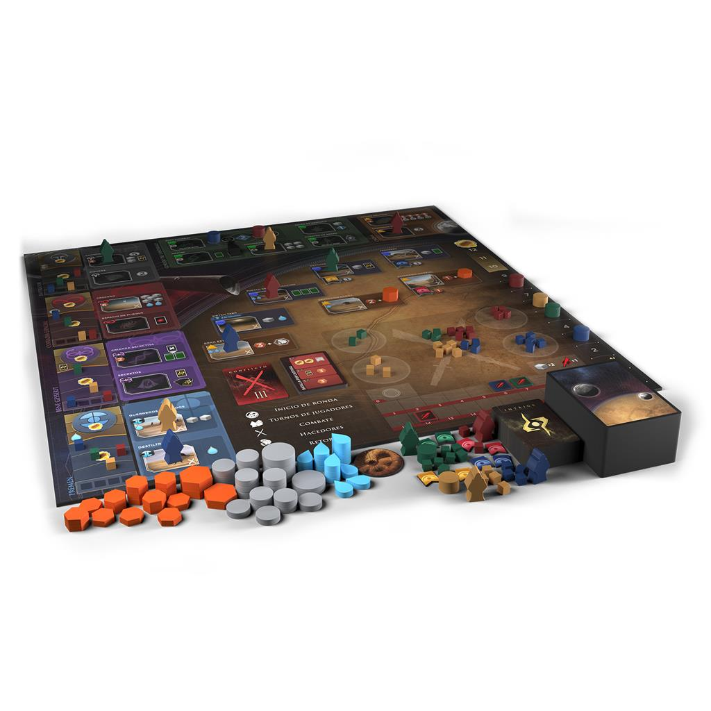

Dune Imperium
 



Controla la especia. Controla el universo.
Arrakis. Dune. El Planeta del Desierto. Alza tu estandarte por encima del vasto yermo que se extiende ante ti. Ahora que las Grandes Casas
del Landsraad reúnen a sus fuerzas y sus espías, ¿a quién influenciarás y a quién traicionarás? Un Emperador tiránico. Las inescrutables Bene Gesserit. La astuta Cofradía Espacial.
Los feroces Fremen del Desierto Profundo. El poder del Imperio puede ser tuyo, pero la guerra no es la única forma de hacerse con él.
Dune: Imperium combina la construcción de mazos
y la asignación de trabajadores en un nuevo juego de estrategia perfectamente ambientado, donde el destino del Imperio depende de tus decisiones. ¿Buscarás aliados políticos o confiarás
en la fuerza militar? ¿Supremacía económica o intrigas sutiles? ¿Un asiento en el consejo... o una hoja afilada? Las cartas están echadas. La elección es tuya. El Imperio espera.